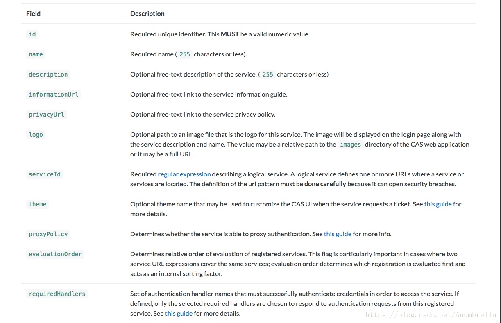

Service配置及管理
首先我们要明白CAS中的Service的概念是什么， 我们在第一节就讲解了在CAS系统中， 主要分为三部分，User、Web应用、SSO认证中心。 User就是我们普通用户，Web应用就是需要接入SSO认证中心的应用也就是这里的Service， 而SSO认证中心就是CAS服务端。
简单来说就是CAS分为服务端和客户端 ，而Service就是指具体的多个客户端（CAS Clients）。
而这里的服务管理（Service Management）就是CAS服务管理工具允许CAS服务器管理员声明和配置哪些服务（Service，CAS客户端）可以在哪些方面使用CAS。 服务管理工具的核心组件是服务注册表，它存储一个或多个注册服务。
接下来先介绍我们的第一个知识点——Service配置！
Service配置
我们刚刚提及到在CAS中， 服务管理工具中的服务注册表当中存储着一个或多个注册服务， 而这些Service中包含着各个行为的元数据，通过配置这些数据我们可以控制这些Service的行为。
主要行为包括一些几点：
- 授权服务 - 控制哪些服务可以参与CAS SSO会话。
- 强制身份验证 - 为强制身份验证提供管理控制。
- 属性发布 - 为服务提供用户详细信息以进行授权和个性化。
- 代理控制 - 通过授予/拒绝代理身份验证功能进一步限制授权服务。
- 主题控制 - 定义用于特定服务的备用CAS主题。
在Service中配置属性主要包括以下这些信息： 
上图介绍了一些在Service中常用的配置项， 对于各个配置属性的含义可以参考具体文档，服务配置。
在这些配置中，比较常使用的主要是：
服务访问策略——(accessStrategy)，具体可以查看：服务策略配置。
服务属性配置——(properties)，具体查看：服务属性配置。
服务到期政策——(expirationPolicy)，具体查看：服务到期配置。
对CAS元数据的配置信息有了大致的了解后，我们需要配置其存储方式， 就像我们前面介绍的多种认证方式一样，用户信息提供了多种方式， 这里的Service存储方式也是提供了多种的解决方案。

推荐使用JSON、YAML、MongoDb、Redis、JPA这几种方式来存储使用，这里也将使用这几种方式来介绍。
JSON
这种方式也是CAS默认初始化使用的，注册表在应用程序上下文初始化时从JSON配置文件中读取服务定义，期望在配置的目录位置内找到JSON文件。
首先添加依赖包：
<dependency>
<groupId>org.apereo.cas</groupId>
<artifactId>cas-server-support-json-service-registry</artifactId>
<version>${cas.version}</version>
</dependency>
在resources/services文件夹下面新建web-10000001.json，具体内容如下：
{
"@class" : "org.apereo.cas.services.RegexRegisteredService",
"serviceId" : "^(https|imaps|http)://.*",
"name" : "web",
"id" : 10000001,
"evaluationOrder" : 10
}
注意: Json文件名字规则为${name}-${id}.json，id必须为Json文件内容中的id一致。
Json文件解释：
- @class：必须为org.apereo.cas.services.RegisteredService的实现类，对其他属性进行一个json反射对象，常用的有RegexRegisteredService，匹配策略为id的正则表达式
- serviceId：唯一的服务id
- name： 服务名称，会显示在默认登录页
- id：全局唯一标志
- description：服务描述，会显示在默认登录页
- evaluationOrder： 匹配争取时的执行循序，最好是比1大的数字
因为在CAS服务中，默认是提供了默认的Service配置项，所以如果添加的Json配置没起作用，可以尝试注释掉默认启动Json，在pom.xml文件里面进行配置，如下：
<plugin>
<groupId>org.apache.maven.plugins</groupId>
<artifactId>maven-war-plugin</artifactId>
<version>2.6</version>
<configuration>
<warName>cas</warName>
<failOnMissingWebXml>false</failOnMissingWebXml>
<recompressZippedFiles>false</recompressZippedFiles>
<archive>
<compress>false</compress>
<manifestFile>${manifestFileToUse}</manifestFile>
</archive>
<overlays>
<overlay>
<groupId>org.apereo.cas</groupId>
<artifactId>cas-server-webapp${app.server}</artifactId>
</overlay>
</overlays>
<dependentWarExcludes>
<!--让war包下的json不初始化-->
**/services/*.json
</dependentWarExcludes>
</configuration>
</plugin>
然后在配置文件application.properties下添加配置：
cas:
serviceRegistry: # Service Registry(服务注册)
initFromJson: true #开启识别Json文件，默认false
#watcherEnabled: true #自动扫描服务配置，默认开启
schedule:
repeatInterval: 120000 #120秒扫描一遍
startDelay: 15000 #延迟15秒开启
json: # Json配置
location: classpath:/services
authn:
accept:
users: casuser::Mellon
Jpa
最后介绍一下Jpa这种方式，通过Java持久层API来实现数据保存到数据库， 可以是Mysql、Oracle、SQL Service这种方式可能使用的比较多一些。
同样的先添加依赖：
<dependency>
<groupId>org.apereo.cas</groupId>
<artifactId>cas-server-support-jpa-service-registry</artifactId>
<version>${cas.version}</version>
</dependency>
添加配置信息：
cas:
serviceRegistry: # Service Registry(服务注册)
initFromJson: false #开启识别Json文件，默认false
#watcherEnabled: true #自动扫描服务配置，默认开启
schedule:
repeatInterval: 120000 #120秒扫描一遍
startDelay: 15000 #延迟15秒开启
json: # Json配置
location: classpath:/services
jpa: # Jpa配置
user: root
password: 123
driverClass: com.mysql.jdbc.Driver
url: jdbc:mysql://127.0.0.1:3306/cas?
dialect: org.hibernate.dialect.MySQL5Dialect
failFastTimeout: 1
healthQuery:
isolateInternalQueries: false
leakThreshold: 10
batchSize: 1
ddlAuto: update #设置配置的服务，一直都有，不会给清除掉 ， 第一次使用，需要配置为 create
#create-drop 重启cas服务的时候，就会给干掉
#create 没有表就创建，有就不创建
#none 一直都有
#update 更新
autocommit: true
idleTimeout: 5000
pool:
suspension: false
minSize: 6
maxSize: 18
maxWait: 2000
timeoutMillis: 1000
更详细的驱动信息可以参考文档：
https://apereo.github.io/cas/5.3.x/installation/JDBC-Drivers.html
启动服务后，还是和前面一样，提示CAS的服务记录是空的，没有定义服务。 希望通过CAS进行认证的应用程序必须在服务记录中明确定义。。。暂时可以忽略掉，马上我们就来配置服务管理。
然后我们去数据库发现，新增了一些表，这就是CAS将服务信息保存到数据库使用的表。
注意这里应该生成的表是5个 registeredserviceimplcontact registeredservice_contacts regexregisteredserviceproperty regexregisteredservice 但是可能由于默认的引擎选择的是MyISAM所以导致 registeredserviceimpl_props不能生成.把其他引擎改成innodb就行
或者手动创建表也行并设置属性cas.serviceRegistry.jpa.ddlAuto=node
CREATE TABLE `regexregisteredservice` (
`expression_type` varchar(50) COLLATE utf8mb4_general_ci NOT NULL DEFAULT 'regex',
`id` bigint NOT NULL AUTO_INCREMENT,
`access_strategy` longblob,
`attribute_release` longblob,
`description` varchar(255) COLLATE utf8mb4_general_ci DEFAULT NULL,
`evaluation_order` int NOT NULL,
`expiration_policy` longblob,
`informationUrl` varchar(255) COLLATE utf8mb4_general_ci DEFAULT NULL,
`logo` varchar(255) COLLATE utf8mb4_general_ci DEFAULT NULL,
`logout_type` int DEFAULT NULL,
`logout_url` varchar(255) COLLATE utf8mb4_general_ci DEFAULT NULL,
`mfa_policy` longblob,
`name` varchar(255) COLLATE utf8mb4_general_ci NOT NULL,
`privacyUrl` varchar(255) COLLATE utf8mb4_general_ci DEFAULT NULL,
`proxy_policy` longblob,
`public_key` longblob,
`required_handlers` longblob,
`responseType` varchar(255) COLLATE utf8mb4_general_ci DEFAULT NULL,
`serviceId` varchar(255) COLLATE utf8mb4_general_ci NOT NULL,
`theme` varchar(255) COLLATE utf8mb4_general_ci DEFAULT NULL,
`username_attr` longblob,
PRIMARY KEY (`id`)
) ENGINE=InnoDB DEFAULT CHARSET=utf8mb4 COLLATE=utf8mb4_general_ci;
CREATE TABLE `regexregisteredserviceproperty` (
`id` bigint NOT NULL AUTO_INCREMENT,
`property_values` longblob,
PRIMARY KEY (`id`)
) ENGINE=InnoDB DEFAULT CHARSET=utf8mb4 COLLATE=utf8mb4_general_ci;
CREATE TABLE `registeredservice_contacts` (
`AbstractRegisteredService_id` bigint NOT NULL,
`contacts_id` bigint NOT NULL,
`contacts_ORDER` int NOT NULL,
PRIMARY KEY (`AbstractRegisteredService_id`,`contacts_ORDER`),
UNIQUE KEY `UK_s7mf4a23wejqx62tt4vh3tgwi` (`contacts_id`)
) ENGINE=MyISAM DEFAULT CHARSET=utf8mb4 COLLATE=utf8mb4_general_ci;
CREATE TABLE `registeredserviceimplcontact` (
`id` bigint NOT NULL AUTO_INCREMENT,
`department` varchar(255) COLLATE utf8mb4_general_ci DEFAULT NULL,
`email` varchar(255) COLLATE utf8mb4_general_ci DEFAULT NULL,
`name` varchar(255) COLLATE utf8mb4_general_ci NOT NULL,
`phone` varchar(255) COLLATE utf8mb4_general_ci DEFAULT NULL,
PRIMARY KEY (`id`)
) ENGINE=MyISAM DEFAULT CHARSET=utf8mb4 COLLATE=utf8mb4_general_ci;
CREATE TABLE `registeredserviceimpl_props` (
`AbstractRegisteredService_id` bigint(20) NOT NULL,
`properties_id` bigint(20) NOT NULL,
`properties_KEY` varchar(255) NOT NULL,
PRIMARY KEY (`AbstractRegisteredService_id`,`properties_KEY`),
UNIQUE KEY `UK_i2mjaqjwxpvurc6aefjkx5x97` (`properties_id`),
CONSTRAINT `FK1xan7uamsa94y2451jgksjkj4` FOREIGN KEY (`properties_id`) REFERENCES `regexregisteredserviceproperty` (`id`),
CONSTRAINT `FK5ghaknoplphay7reury7n3vcm` FOREIGN KEY (`AbstractRegisteredService_id`) REFERENCES `regexregisteredservice` (`id`)
) ENGINE=InnoDB DEFAULT CHARSET=utf8;